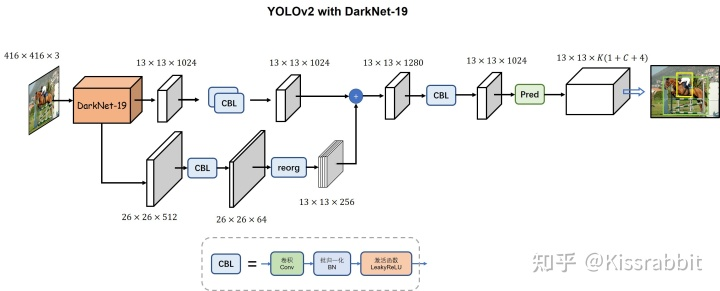
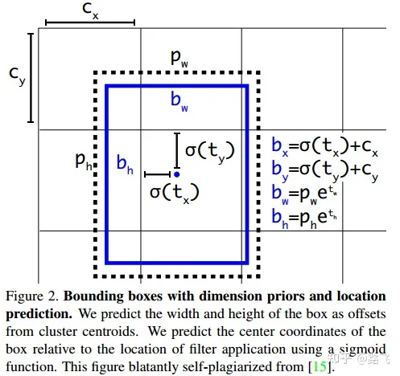
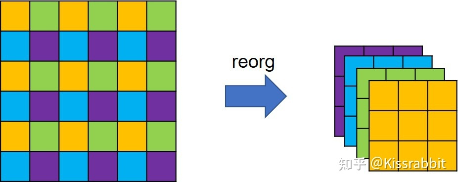
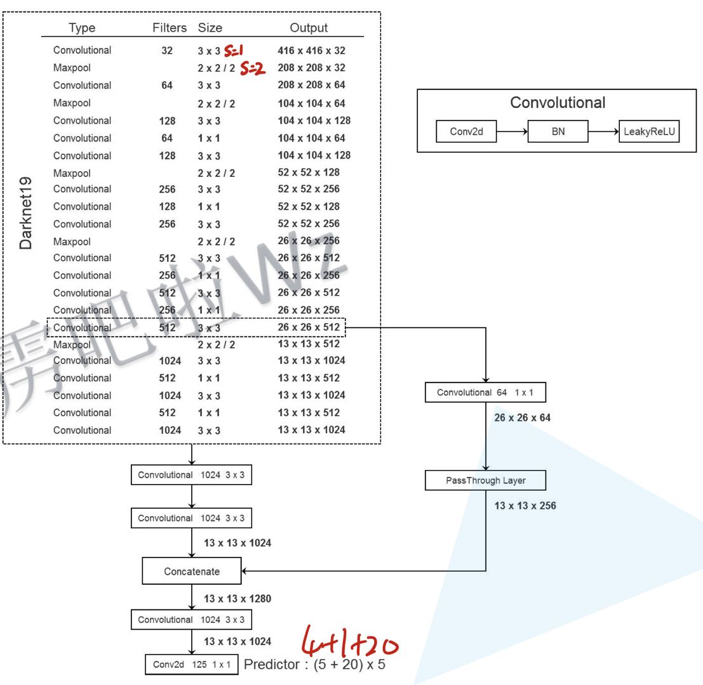
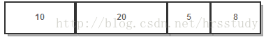

Yolov2

文章目录
YOLO与其他模型的对比：
最大的不同：YOLO把网络分成很多的网格，而其他网络虽然也可以看做是分了很多的网格。
- 在YOLO中，如果物体的中心点落入某网格中，则这个网格会负责这个物体的预测。这就显的锚框的坐标不是很重要。
- 而在其他网络中，如SSD，网络的中心点显得格外重要。
YOLO-v2

各种尝试：
加入BN层
卷积三件套：线性卷积，BN层，激活函数(LeakyReLU)
于是，YOLOv1得到了第一次性能提升，在VOC2007测试集上，从原本的63.4% mAP提升到65.8% mAP。
加入BN以后可以删掉Dropout，因为模型过拟合不会过拟合。
高分辨率主干网络
YOLO- v1的backbone是在ImageNet上进行预处理，预处理时输入的图片是224x224的。而预测时输入的图片是448x448的高分辨率图像，网络突然在这上面进行处理难免会眼晕。
在224x224的低分辨率图像上训练好分类网络，又在448x448上进行10次微调。最后去掉全局平均层和Softmax层。
于是，YOLOv1网络获得了第二次性能提升：从65.8% mAP提升到69.5% mAP。这个只有YOLO的算法在使用，可能因为问题不是很严重。
anchor box机制
锚框：先验框。
本质：提供边界框的尺寸先验，网络使用偏移量在这些先验框上进行后验调整。
作用：更容易收敛。可能会导致模型精度微小的减少，但是会增加模型的召回率。
YOLO系列的anchorbox只有长宽两个参数，中心点就是网格中点。
相较于YOLOv1的直接回归边界框的宽高，基于先验框的方法表现得往往更好。
全卷积神经网络
-
网络改为全卷积网络。
-
SxS的图片上，每个pixel上K个先验框，YOLO输出SxSxKx(1+4+c)。
尽管网络结构变成了全卷积网络，并使用了anchor box机制，但网络的精度并没有提升，反倒是略有所下降，69.5% mAP降为69.2% mAP，但召回率却从81%提升到88%。召回率的提升意味着YOLO可以找出更多的目标了，尽管精度下降了一点点。
新的主干网络
新网络使用DarkNet19，19个卷积层，并且每个卷积都是三件套。
于是，YOLOv1网络从上一次的69.2% mAP提升到69.6% mAP。
kmeans聚类先验框
Faster系列的先验框都是人工设计的，包括先验框的数量和大小。
然而人工设计的不一定好。为了去人工化，作者采用kmeans在数据集上对先验框进行聚类。并使用iou作为聚类的衡量指标。 $$ d(box,centroid) = 1-Iou(box,centroid) $$ 通过kmeans聚类的方法所获得的先验框显然会更适合于所使用的数据集.
但是带来一些问题：
- 从A数据集聚类出的先验框显然难以适应新的B数据集。尤其A和B两个数据集中所包含的数据相差甚远时，这一问题会更加的严重。
- 如果样本不够充分，这种聚类出来的先验框也就不够好，这也是YOLOv2以及后续的YOLO版本的潜在问题之一。
- 倘若数据集规模过小、样本不够丰富，那么由聚类得到的先验框也未必会提供足够好的尺寸先验信息。
使用kmeans聚类方法获得先验框，再配合“Direct location prediction”的边界框预测方法，YOLOv1的性能得到了显著的提升：从69.6% mAP提升到74.4% mAP。
性能提升的主要来源在于kmeans聚类，更好的先验信息自然会有效提升网络的检测性能。
Direct location prediction
原始YOLO模型在早期的迭代训练中，模型不稳定。大多数的不稳定来源于对检测框位置坐标（x，y）的预测。对于这种预测偏差值的情况，模型需要长时间的随机初始化才能进行稳定地训练。
因此在yoloV2中，直接预测相对于单元格的相对位置坐标
改进：
将预测的边界框中心限制在当前cell中—加快网络收敛。
网络输出${t_x,t_y,t_w,t_h}$,$c_x,c_y$为网格的左上顶点，$p_w,p_h$为边界框的先验长宽。所以anchor只有长宽两种信息，没有中心点。
 $$ \begin{split} b_x &= \sigma(t_x) + c_x\\ b_y &= \sigma(t_y) + c_y\\ b_w &= p_we^{t_w}\\ b_h &= p_he^{t_h} \end{split} $$
更高分辨率的特征-passThrough
借鉴SSD的思想，为了引入更多的细节信息，作者将backbone的第17层卷积输出的26×26×512特征图拿出来，做一次特殊的降采样操作，得到一个13×13×2048特征图，然后将二者在通道的维度上进行拼接，最后在这张融合了更多信息的特征图上去做检测。

特征图在经过reorg操作的处理后，特征图的宽高会减半，而通道则扩充至4倍，因此，从backbone拿出来的26×26×512特征图就变成了13×13×2048特征图。这种特殊降采样操作的好处就在于降低分辨率的同时，没丢掉任何细节信息，信息总量保持不变。
加上该操作后，在VOC 2007测试集上的mAP从74.4%再次涨到了75.4%。由此可见，引入更多的细节信息，确实有助于提升模型的检测性能。
多尺度训练
使用图像金字塔，把输入图像缩放到不同尺寸。
分辨率越高，构成目标所需要的像素量就越多，目标本身的大小（或像素面积）也就越大。通过使用图像金字塔的操作，网络能够在不同尺寸下去感知同一目标，从而增强了其本身对目标尺寸变化的鲁棒性。
在训练网络时，每训练迭代10次（常用iteration表示训练一次，即一次前向传播和一次反向传播，而训练一轮次则用epoch，即数据集的所有数据都经过了一次迭代），就从{320，352，384，416，448，480，512，576，608}选择一个新的图像尺寸用作后续10次训练的图像尺寸。注意，这些尺寸都是32的整数倍，因为网络的最大降采样倍数就是32，倘若输入一个无法被32整除的图像尺寸，则会遇到些不必要的麻烦。
通常，多尺度训练是常用的提升模型性能的技巧之一。不过，技巧终归是技巧，并不总是有效的，若是我们的目标几乎不会有明显的尺寸变化，那么也就没必要进行多尺度训练了。
配合多尺寸训练，YOLOv1再一次获得了提升：从75.4% mAP提升到76.8% mAP。
正负样本匹配策略：
论文中：
- 每个GT只分配一个anchor。（物体中心落入这个cell里，这个cell就负责预测这个物体。）
- 对于每个GT，选择与之重合最大的先验框为正样本。
- 不是重合最大的框，但是超过额定阈值的锚框丢弃。
- 小于阈值的标记为负样本。
实现中：
- 物体中心落入这个cell里，这个cell就负责预测这个物体。
- 计算GT与anchor的IOU(左上点重合)。
- 若IOU>某一阈值，就为正样本。
- 即使多个anchor都大于阈值也无妨。
损失函数：
置信度损失：

直接对置信度进行二分类
类别损失：

对类别经过sigmoid二分类，每类的概率之间独立。
定位损失：

实现YOLO-v2
网络搭建：

K-means聚类anchor：
k-means++是k-means的增强版，其基本思想是：初始的聚类中心之间的相互距离要尽可能的远。
- 锚框中随机选择一个锚框作为中心点。
- 计算所有锚框与这个锚框的距离。
- 选择一个新数据点作为新的聚类中心。原则：D(X)较大的点，被选取作为聚类中心的概率较大。
- 重复上述步骤知道K个聚类中心被选择出来。
第2、3步选择新点的方法如下：
- 对于每个点，我们都计算其和最近的一个“种子点”的距离D(x)并保存在一个数组里，然后把这些距离加起来得到Sum(D(x))。
- 然后，再取一个随机值，用权重的方式来取计算下一个“种子点”。这个算法的实现是，先用Sum(D(x))乘以随机值Random得到值r，然后用currSum += D(x)，直到其currSum>r，此时的点就是下一个“种子点”。

假设A、B、C、D的D(x)如上图所示，当算法取值Sum(D(x))*random时，该值会以较大的概率落入D(x)较大的区间内，所以对应的点会以较大的概率被选中作为新的聚类中心。
标记文件的宽高计算出的真实框的宽高都是相对于整张图片的。YOLOv2的anchor box坐标是相对于珊格边长的比例，因此要把先验框的长宽也转换为相应的网络比例。
|
|
实现细节：锚框的超参数只对先验框的宽高有影响，对锚框的中心点无影响。所以只使用锚框的宽高坐标，中心点一致置为0.
|
|
基于IOU的正样本选择
如何给先验框标注标签？
继承于YOLO-v1，每个像素点B个锚框，如果这个像素点是中心点，只有这B个锚框在争，所以只需要在B个先验框里选。
而SSD无中心点这个概念，所以SSD只依靠先验框与真实框之间的iou进行选择。
YOLO-V2现在每个像素点B个锚框，所以需要从中选择适合做正样本的先验框。
如何选择：
- 计算这B个先验框与此处的真实框之间的iou，并设定一个阈值
- 所有的IOU都小于阈值：为了不丢失真实框，从中选择最大iou的先验框。
- 有多个IOU大于或者等于阈值。取其中最大的iou所对应的锚框。
- 未被选上的锚框不参与后续的任何损失计算。
计算label： $$ \begin{split} t_x &= \frac{c_x}{stride} - grid_x \\ t_y &= \frac{c_y}{stride} - grid_y \\ t_w &= log(\frac{w_x}{p_w}) \\ t_h &= log(\frac{h_s}{p_h}) \end{split} $$
|
|
仍是在batch size的维度上去遍历每一个样本，然后为每一个样本的每一个真实框去计算学习标签。
在拿到一个真实框的数据后，gt_creator函数内部会调用generate_txtytwth函数去完成制作正样本的主要计算，其基本思路是先计算这个真实框的中心点所在的网格坐标，然后计算该真实框与此网格中的个先验框的IoU。
文章作者 杨浩伟
上次更新 2023-02-03